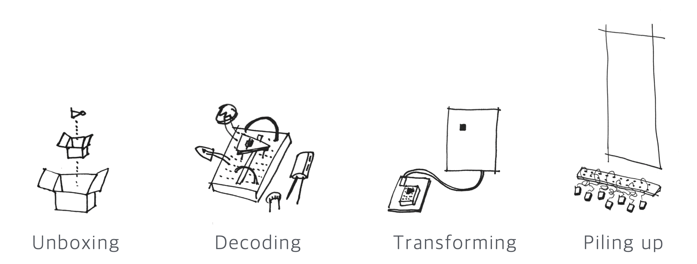
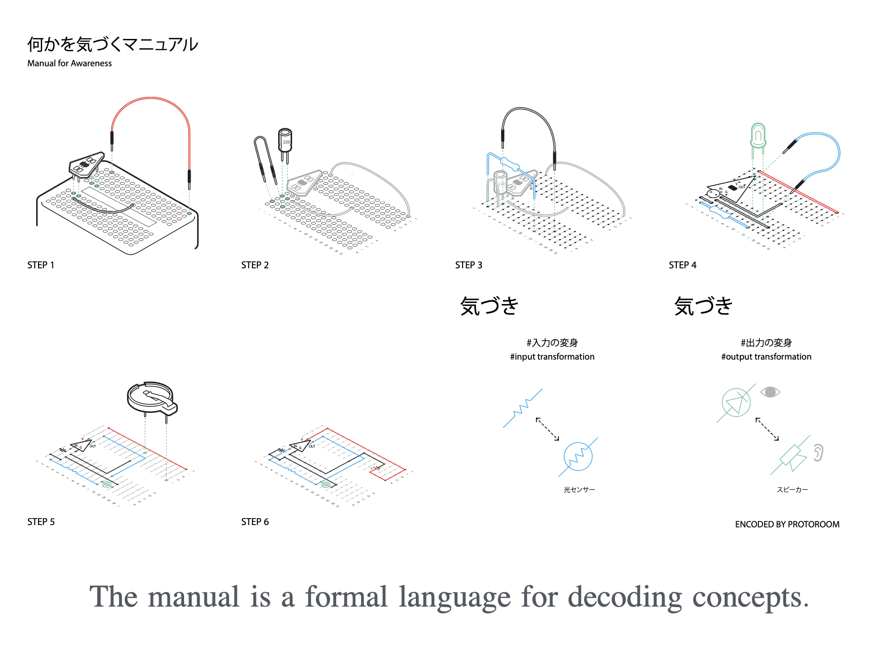
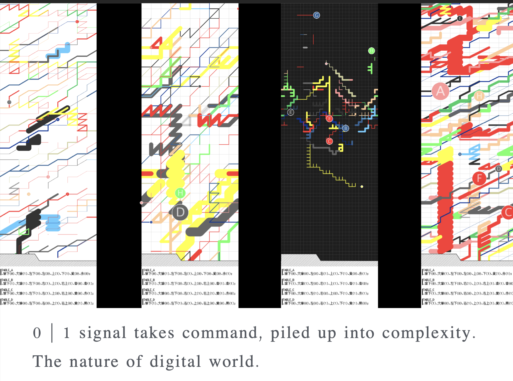

01 signal
sensuous transforming of 0 | 1 signal Ver.1 (2016)
‘sensuous transforming of 0 | 1 signal’ is an installation work that allows construction of kits that allow experience and contemplation on the elements of computing while converting and transforming the 0,1 bits into different layers through workshop and exhibition.



© 2023 PROTOROOM